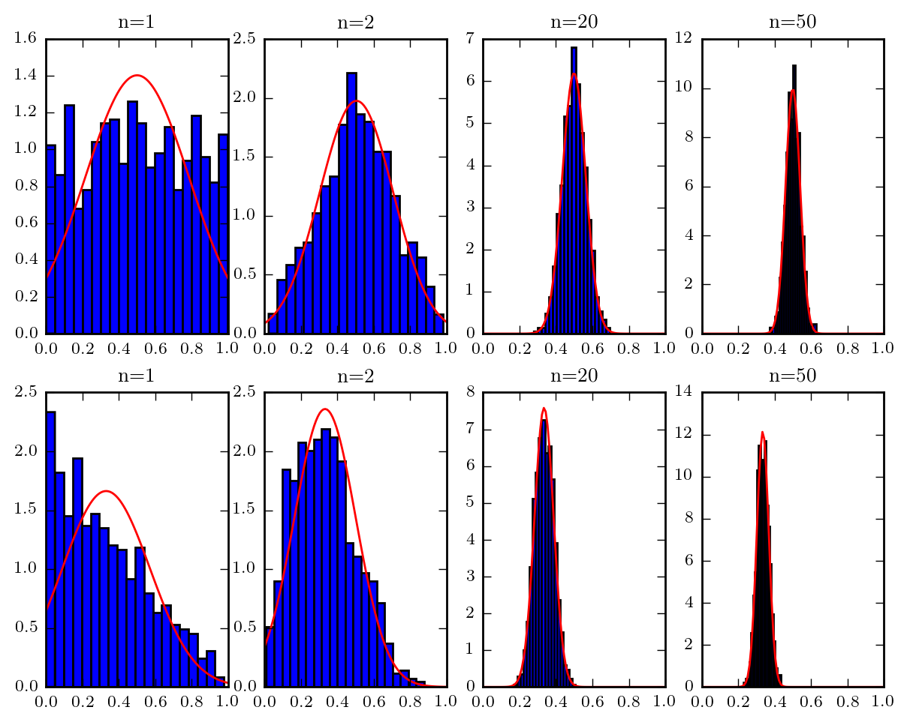
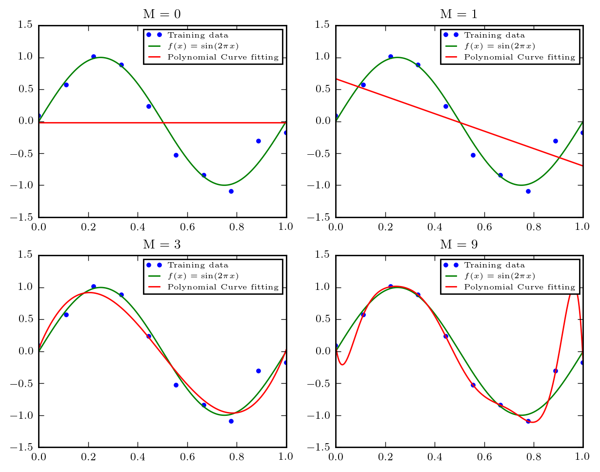

Python PRML
Table of Contents
1 Chapter 1: Introduction
1.1 Central Limit Theorem
#!/usr/bin/env python3 # -*- coding: utf-8 -*- import matplotlib.pyplot as plt import numpy as np from scipy.stats import uniform as uniform_dist from scipy.stats import norm as norm_dist from scipy.stats import beta as beta_dist def central_limit(rvs, n, length): rv_mean = np.zeros(length) for i in range(n): rv = rvs(size=length) rv_mean = rv_mean + rv rv_mean = rv_mean / n gaussian_params = norm_dist.fit(rv_mean) gaussian = norm_dist(gaussian_params[0], gaussian_params[1]) return rv_mean, gaussian def main(): fig = plt.figure() x = np.linspace(0, 1, 100) sizes = [1, 2, 20, 50] fig_row, fig_col = 2, 4 # Mean of i.i.d uniform for i, n in enumerate(sizes): ax = fig.add_subplot(fig_row, fig_col, i + 1) data, gaussian = central_limit(uniform_dist.rvs, n, 1000) ax.hist(data, bins=20, normed=True) plt.plot(x, gaussian.pdf(x), "r", lw=1) plt.title("n={0}".format(n)) # Mean of i.i.d beta(1, 2) for i, n in enumerate(sizes): ax = fig.add_subplot(fig_row, fig_col, i + fig_col + 1) data, gaussian = central_limit(beta_dist(1, 2).rvs, n, 1000) ax.hist(data, bins=20, normed=True) plt.plot(x, gaussian.pdf(x), "r", lw=1) plt.title("n={0}".format(n)) plt.show() if __name__ == '__main__': main()

1.2 Polynomial Curve Fitting
#!/usr/bin/env python3 # -*- coding: utf-8 -*- import numpy as np import matplotlib.pyplot as plt def y(x, w): return w.dot([x ** j for j in np.arange(0, w.size)]) def least_squares(M, x, t): x = np.array([x ** j for j in np.arange(0, M + 1)]) return np.linalg.solve(x.dot(x.T), x.dot(t)) def main(): noise_mu = 0 noise_sigma = 0.2 x = np.linspace(0, 1, 10) t = np.sin(2 * np.pi * x) + np.random.normal(noise_mu, noise_sigma, x.size) xs = np.linspace(0, 1, 500) t_ideal = np.sin(2 * np.pi * xs) M = [0, 1, 3, 9] fig_row = 2 fig_col = np.ceil(len(M) / fig_row) fig = plt.figure() for i, m in enumerate(M): w = least_squares(m, x, t) fig.add_subplot(fig_row, fig_col, i + 1) plt.plot(x, t, 'b.', label="Training data") plt.plot(xs, t_ideal, 'g-', label="$f(x) = \sin(2\pi x)$") plt.plot(xs, [y(x, w) for x in xs], 'r-', label="Polynomial Curve fitting") plt.legend() plt.title("M = {0}".format(m)) plt.show() if __name__ == '__main__': main()
